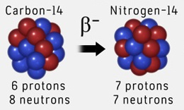
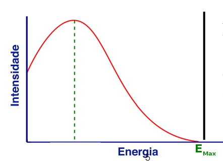
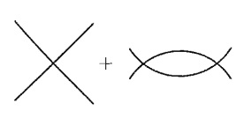

Teoria de Fermi
para Interação Fraca
Gyell Gonçalves de Matos
Uma Abordagem Histórica
Antoine Henri Becquerel 1986.
Marie Curie e Pierre Curie.

Rutherford faz sua contribuição (1899)

Becquerel e a razão \(e/m\) (1900).

Rutherford e Soddy (1901)

Lise Meitner e Otto Hahn (1911)
James Chadwick (1914)


Pauli x Bohr

A Teoria do Fermi!
Nêutron \(\rightarrow\) Neutrino
\[\beta^{-}:n\rightarrow p+e^{-}+\bar{\nu}_{e}\\ \beta^{+}:p\rightarrow n+e^{+}+\nu_{e}\]
\(\beta^{+}\)
\[\mathcal{L}_{Fermi}=G_{F}\bar{\psi}_{p}\psi_{n}\bar{\psi}_{e}\psi_\nu,\]
Interação 4-Fermi
Viola Paridade.
É não-renormalizável.
Parity Violation
Otto Laporte demonstrou a lei de conservaçãode paridade (1924).
Eugene Wigner, mostra a simetria por trás dessa lei (1927).
Simetria de Reflexão
\[r=(x,y,z)\\r'=-r=(-x,-y,z)\\\] (Eugene Wigner)
Parity
\(\sum_{j}p_{j}\) não se conserva.
\(\prod_{j}p_{j}\) se conserva.
Após um evento teremos a parity oposta.
Interação 4-Fermi é não-renormalizáveis
- Super Renormalizável \(\rightarrow d>0\)
- Renormalizável \(\rightarrow d=0\)
- Não-Renormalizável \(\rightarrow d<0\)
\[G_{F}=-2\]
Métodos de Regularização.
Dimensão de \(G_{F}\)
\[\mathcal{L}=\bar{\psi}(\eth-m)\psi+G_{F}\bar{\psi}\psi\bar{\psi}\psi\]
\[I=\int\bar{\psi}\eth\psi d^{4}x\]
\[[dx]=-1\\ \left[\partial_{\mu}\right]=1\\ \left[I\right]=0.\]
\[\left[\bar{\psi}\right]=\left[\psi\right]=3/2\]
Teorias não renormalizáveis
\[\mathcal{L}=G_{F}\bar{\psi}\psi\bar{\psi}\psi+a_{1}G_{F}^{2}\bar{\psi}\psi\Box\bar{\psi}\psi +a_{2}G_{F}^{3}\bar{\psi}\eth\psi\Box\bar{\psi}\eth\psi+\cdots\] \(a_{i}\)'s são números.
\(\psi\psi\rightarrow\psi\psi\)

\(\mathcal{M}_{tree}(s)\sim G_{F}+a_{1}G_{F}^{2}s+a_{2}G_{F}^{3}s^{2}+\cdots\)
\(\mathcal{M}_{loop}(s)\sim G_{F}^{2}\left(b_{0}\Lambda^{2}+b_{1}s+b_{2}sln(\Lambda^{2}/s)\right)\)
Bogolyubov, N. N., and D. V. Shirkov. "Introduction to Quantum Fields Theory." Nauka Eds, Moscow, 1973, Second edition, Revised. 416 pp. (1973).
\(\mathcal{M}_{tree}+\mathcal{M}_{loop}\sim(G_{F}+G_{F}^{2}b_{0}\Lambda^{2})+sG_{F}^{2}(a_{1}+b_{1}+b_{2}ln\Lambda^{2})\\ -b_{2}G_{F}^{2}slns+a_{2}G_{F}^{3}s^{2}+\cdots\)
Processo de Renormalização
Counterterms
\[\mathcal{L}=Z_{F}G_{F}\bar{\psi}\psi\bar{\psi}\psi+Z_{1}a_{1}G_{F}^{2}\bar{\psi}\psi\Box\bar{\psi}\psi +Z_{2}a_{2}G_{F}^{3}\bar{\psi}\eth\psi\Box\bar{\psi}\eth\psi+\cdots\]
\[Z_{F}=1+\delta_{F}\]
\(\mathcal{M}_{tree}+\mathcal{M}_{loop}+\mathcal{M}_{c.t}\sim(G_{F}+G_{F}^{2}b_{0}\Lambda^{2}+G_{F}\delta_{F})+\\sG_{F}^{2}(a_{1}+b_{1}+b_{2}ln\Lambda^{2}+a_{1}\delta_{1}) -b_{2}G_{F}^{2}slns+\cdots\)
escolhendo \[\delta_{F}=-b_{0}\Lambda_{0}G_{F}, \\ \delta_{1}=-(1/a_{1})[b_{1}+b_{2}ln(\Lambda^{2}/s_{0})]\]
\(\mathcal{M}(s)=\mathcal{M}_{tree}+\mathcal{M}_{loop}+\mathcal{M}_{c.t}\sim G_{F}+sG_{F}^{2}[a_{1}-b_{2}ln(s/s_{0})]\\+a_{2}s^{2}G_{F}^{3}\cdots\)
\[\frac{\mathcal{M}(s_{1})-G_{F}}{s_{1}G_{F}^{2}}-\frac{\mathcal{M}(s_{2})-G_{F}}{s_{2}G_{F}^{2}}\sim b_{2}ln\frac{s_{2}}{s_{1}}\]
Lagrangianas de Tree-Level
não dependem de
\[ln(s)\]
Apenas para Baixas Energias \(E < G^{-1/2}\)
UV Completing the Fermi Theory
Bosons Massivos (\(W^{\pm};Z\))
Eletrofraca
\[\mathcal{L}_{M}=-\frac{1}{4}F_{\mu\nu}^{2}+\frac{1}{2}M^{2}W^{2}_{\mu}+\bar{\psi}(i\gamma_{\mu}\partial+g\gamma_{\mu}W)\psi,\]
onde
\[F_{\mu\nu}=\partial_{\mu}W_{\nu}-\partial_{\nu}W_{\mu}.\]
...
"...diferença na metodologia entre mecânica quântica não relativista e relação teoria quântica de campos...\(V(\vec{r})\) que aparece na equação de Schrodinger é arbitrário...A mecânica não coloca limites sobre quais interações podem ser encontradas no mundo real... teoria quântica de campos impõe restrições muito estreitas na natureza (ou vice-versa)...a única tarefas deixadas para os físicos de partículas são enumerar as partículas elementares que existem e medir suas massas e constantes de acoplamento... um sinal de que os físicos de partículas estão no caminho certo em direção a um teoria fundamental."
Refecências
JENSEN, C. Controversy and consensus: nuclear beta decay 1911–1934. [S.l.]: Springer Science & Business Media, 1999. v. 24.
LESOV, A. The weak force: From fermi to feynman. arXiv preprint arXiv:0911.0058, 2009.
NOBEL PRIZE. Henri Becquerel. Disponível em:https://www.nobelprize.org/prizes/physics/ 1903/becquerel/biographical/. Acesso em: 14 Novembro 2018.
NOBEL PRIZE. Marie Curie. Disponível em:https://www.nobelprize.org/prizes/physics/ 1903/marie-curie/facts/. Acesso em: 14 Novembro 2018.
NOBEL PRIZE. Pierre Curie. Disponível em:https://www.nobelprize.org/prizes/physics/ 1903/pierre-curie/facts/. Acesso em: 14 Novembro 2018.
PARISI, G. The theory of non-renormalizable interactions: The large n expansion. Nuclear Physics B, Elsevier, v. 100, n. 2, p. 368–388, 1975.
PESKIN, M. E. An introduction to quantum field theory. [S.l.]: CRC Press, 2018.
WILCZEK, F. Quantum field theory. In: More Things in Heaven and Earth. [S.l.]: Springer,
p. 143–160.
YANG, C. N. Fermi’s β-decay theory. International Journal of Modern Physics A, World Scientific, v. 27, n. 03n04, p. 1230005, 2012.
https://gyell.github.io/4-Fermi-Theory
Obrigado!